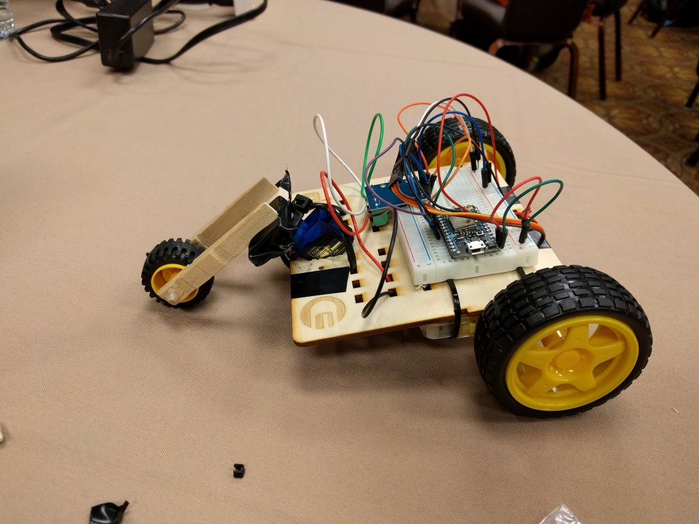
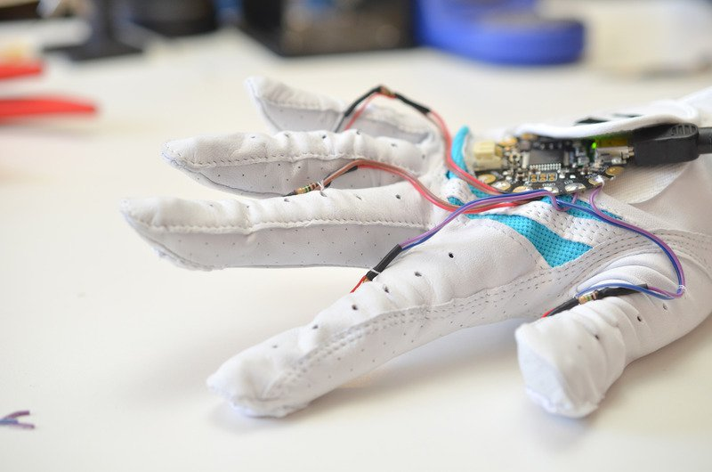
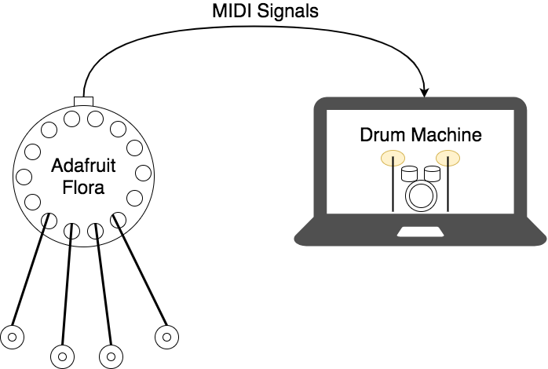
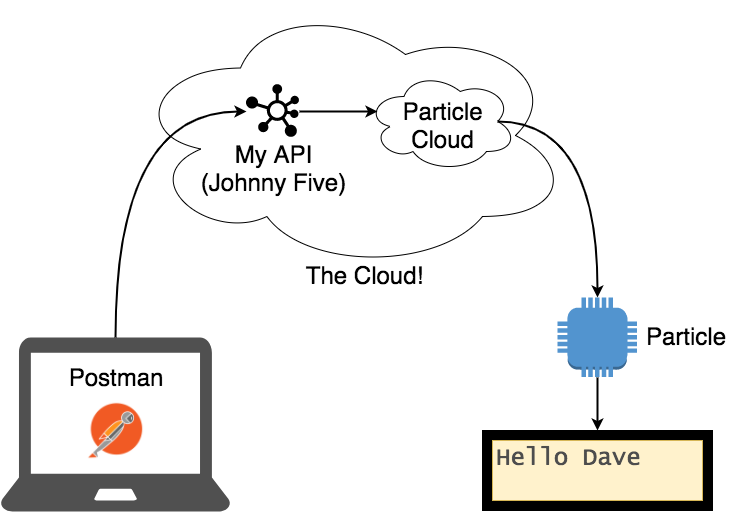
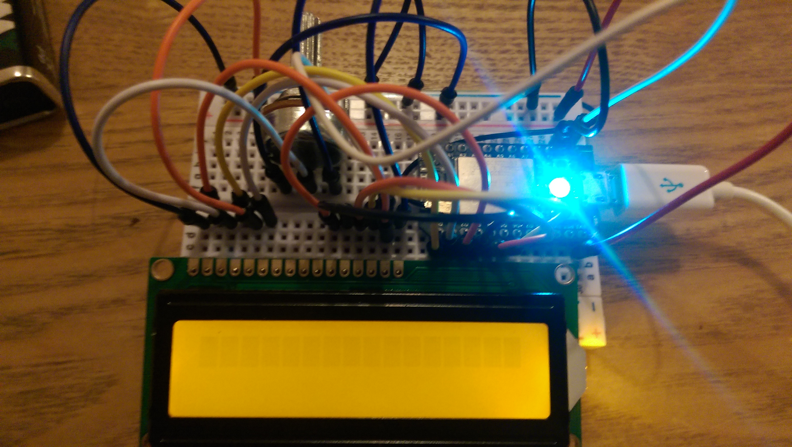
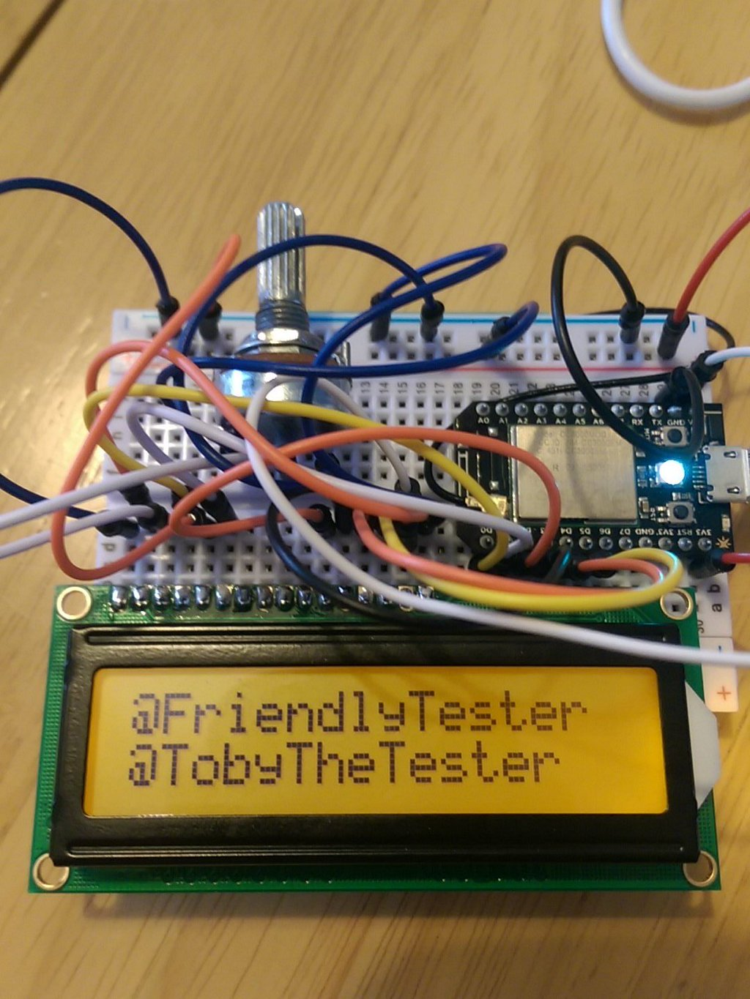

I Turned It On With my Laptop! A Year in the Life of Internet of Things - Created by Mark Winteringham / @2bittester © 2017
I Turned It On With my Laptop!
A Year in the Life of Internet of Things
Mark Winteringham
2bittester

mwtestconsultancy.co.uk

@2bittester

lnked.in/markwinteringham
Getting started

www.particle.io
What did I learn?
- Being an IoT hobbyist is fun but fiddly
- How services connected together using APIs
- Some level of coding skill is required
- IDEs for the Internet button were poor


Johnny-Five
What did I learn?
- There are different ways to code IoT devices
- The power lives in the Micro Controller
Personal projects

www.adafruit.com

What did I learn?
- There are lots of open source projects to try out
- IDEs for IoT are really poor and you have to hunt out for libraries
- Soldering and working with basic electronic components
- Some understanding of electronics is required to build IoT devices
- There is a physical element to consider in IoT testing



What did I learn?
- Debugging problems can be problematic
- Testing of the product required me to test different sections individually
- Not everything that fails in IoT is a software problem
Teaching with IoT
'What! I have to learn API testing!''
'I wanted to go deeper into the device!'
'Why did your APIs stop working?'
Wrapping up
Questions?
@2bittester


 www.adafruit.com
www.adafruit.com